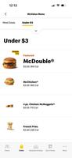

0

Federal authorities are now reviewing a string of deaths and disappearances involving scientists tied to sensitive U.S. aerospace and nuclear work, though officials have not established any confirmed link between the cases. The FBI says it "is spearheading the effort to look for connections into the missing and deceased scientists," adding that it "is working with the Department of Energy, Department of War, and with our state ... and local law enforcement partners to find answers." The Republican-led House Oversight Committee also announced an investigation into the reports. CNN reports: A nuclear physicist and MIT professor fatally shot outside his Massachusetts residence. A retired Air Force general missing from his New Mexico home. An aerospace engineer who disappeared during a hike in Los Angeles. These are among at least 10 individuals connected to sensitive US nuclear and aerospace research who have died or disappeared in recent years, prompting concerns whether they are connected and fueling speculation online about the possibility of nefarious activity. [...]
The Defense Department said only that it would respond to the committee directly, and the Department of Energy referred questions to the White House. In a post on X, NASA said it is "coordinating and cooperating with the relevant agencies" in relation to the scientists. "At this time, nothing related to NASA indicates a national security threat," NASA spokesperson Bethany Stevens said.
The cases vary widely in circumstance. Some involve unsolved homicides, while others are missing persons cases with no signs of foul play. In at least two instances, families have pointed to preexisting medical conditions or personal struggles as explanations. Authorities have not established any links between the cases. The White House said last week it is also working with federal agencies to probe any potential links between the deaths and disappearances, with President Donald Trump referring to the matter as "pretty serious stuff." "The United States has thousands of nuclear scientists and nuclear experts," said Rep. James Walkinshaw, a Democrat who also serves on the Oversight Committee. "It's not the kind of nuclear program that potentially a foreign adversary could significantly impact by targeting 10 individuals."
Read more of this story at Slashdot.
An anonymous reader quotes a report from the New York Times: SpaceX, Elon Musk's rocket and satellite company, said on Tuesday that it had struck a deal with the artificial intelligence start-up Cursor that could result in its acquiring the young company for $60 billion. SpaceX is making the deal just as it prepares to go public in what is likely to be one of the largest initial public offerings ever. In a social media post, SpaceX said the combination with Cursor, which makes code-writing software, would "allow us to build the world's most useful" A.I. models.
SpaceX added that the agreement gave it the option "to acquire Cursor later this year for $60 billion or pay $10 billion for our work together." It is unclear if the companies plan to consummate the deal before or after SpaceX's I.P.O., which could happen as early as June. [...] Cursor, which has raised more than $3 billion in funding, was founded in 2022 and made waves as a fast-growing A.I. start-up. It was under pressure in recent months after OpenAI and Anthropic announced competing code-writing products that were embraced by tech companies. Cursor had been in talks to raise funding in recent weeks.
Read more of this story at Slashdot.
Florida's attorney general has launched a criminal investigation into OpenAI over allegations that the accused gunman in a shooting at Florida State University last year used ChatGPT to help plan the attack. OpenAI says the chatbot is "not responsible for this terrible crime" and only provided factual information available from public sources. NPR reports: The Republican attorney general, James Uthmeier, said at a press conference in Tampa on Tuesday that accused gunman Phoenix Ikner consulted ChatGPT for advice before the shooting, including what type of gun to use, what ammunition went with it, and what time to go to campus to encounter more people, according to an initial review of Ikner's chat logs. "My prosecutors have looked at this and they've told me, if it was a person on the other end of that screen, we would be charging them with murder," Uthmeier said. "We cannot have AI bots that are advising people on how to kill others."
Uthmeier's office is issuing subpoenas to OpenAI seeking information about its policies and internal training materials related to user threats of harm and how it cooperates with and reports crimes to law enforcement, dating back to March 2024. At the press conference, Uthmeier acknowledged the investigation is entering into uncharted territory and is uncertain about whether OpenAI has criminal liability. "We are going to look at who knew what, designed what, or should have done what," he said. "And if it is clear that individuals knew that this type of dangerous behavior might take place, that these types of unfortunate, tragic events might take place, and nevertheless still turned to profit, still allowed this business to operate, then people need to be held accountable."
[...] Ikner, 21, is facing multiple charges of murder and attempted murder for the April 2025 shooting near the student union on FSU's Tallahassee campus, where he was a student at the time. His trial is set to begin on Oct. 19. According to court filings, more than 200 AI messages have been entered into evidence in the case.
Read more of this story at Slashdot.
Reuters reports that Meta plans to start collecting U.S.-based employees' mouse movements, clicks, keystrokes, and occasional screen snapshots to train AI agents that can better learn how humans use computers. The tool, called Model Capability Initiative (MCI), will reportedly "not be used for performance assessments or any other purpose besides model training and that safeguards were in place to protect 'sensitive content.'" From the report: Meta CTO Andrew Bosworth told employees in a separate memo shared on Monday that the company would step up internal data collection as part of those "AI for Work" efforts, now re-branded as Agent Transformation Accelerator (ATA). "The vision we are building towards is one where our agents primarily do the work and our role is to direct, review and help them improve," Bosworth said. The aim, he added, was for agents to "automatically see where we felt the need to intervene so they can be better next time." Bosworth did not explicitly spell out how those agents would be trained, but said Meta would be "rigorous" about "building up data and evals for all the types of interactions we have as we go about our work."
Meta spokesperson Andy Stone acknowledged that the MCI data would be among the inputs. [...] "If we're building agents to help people complete everyday tasks using computers, our models need real examples of how people "actually use them -- things like mouse movements, clicking buttons, and navigating dropdown menus," said Stone.
Read more of this story at Slashdot.
An anonymous reader quotes a report from Bloomberg: At Google, leaders are anxious about falling behind in the race to offer AI coding tools, especially as rivals like Anthropic PBC offer more effective and popular tools to businesses, according to people familiar with the matter. The search giant is now working to unite some of its coding initiatives under one banner to speed progress and take advantage of a surge in customer interest. In some corners of Alphabet's Google, particularly AI lab DeepMind, concerns about the company's position are mounting, according to current and former employees and executives, who declined to be named because they weren't authorized to speak publicly.
Businesses are just starting to realize that AI coding tools can enable anyone to build products by prompting a chatbot. But Google doesn't have a clear solution for them. Its Gemini model's capabilities are sprinkled across half a dozen different coding products with different branding, indicating how the company's lack of focus and competing internal efforts have hampered success, the people said. Even internally, some Google engineers prefer to use Anthropic's Claude Code, they said. More concerning, the people said, are the engineers who are struggling to adopt AI coding at all. [...] Google's emphasis on its own technology has also complicated the push to catch up. Most employees are banned from using competing tools such as Claude Code or Codex due to security concerns, but Googlers can request exceptions if they can demonstrate they have a business case, one former employee said. Some teams at DeepMind, including those working on the Gemini model, internal applications, and open source models, use Claude Code, according to three former employees. "You want the best people to use the best tool, even inside Google," one of the former employees said. [...]
In recent years, DeepMind has tried to tighten control over how its AI breakthroughs are woven into Google products. Last year, Google appointed Kavukcuoglu to a new position as chief AI architect, a role in which he is charged with folding generative AI into Google products. Yet confusion about who is leading the charge on AI coding persists. Along with DeepMind, Google Cloud, Google Core, Google Labs and Android are all pushing AI coding in different ways, one of the people said. [...] Within the Googleplex, there is a philosophical clash between AI researchers who want to move as quickly as possible and more traditional senior engineers who have exacting standards for code quality, former employees say. AI usage is factored into performance reviews, according to a former employee. But engineers who try to use internal AI coding tools often hit capacity constraints due to competition for computing power, the former employee said.
Read more of this story at Slashdot.
Microsoft is cutting the monthly price of Xbox Game Pass Ultimate and PC Game Pass, but the tradeoff is that new Call of Duty releases will no longer arrive on the service at launch. Instead, they'll show up about a year later. The Verge reports: After Xbox CEO Asha Sharma admitted last week that "Game Pass has become too expensive for players," Microsoft is dropping the price of Xbox Game Pass Ultimate and PC Game Pass. Starting today, Xbox Game Pass Ultimate drops from $29.99 to $22.99 a month, and PC Game Pass moves to $13.99, down from $16.49 a month.
The price drops are being fueled in part by future of Call of Duty titles no longer joining Game Pass Ultimate or PC Game Pass at launch. "New Call of Duty games will be added to Game Pass Ultimate and PC Game Pass during the following holiday season (about a year later), while existing Call of Duty titles already in the library will continue to be available," says Microsoft.
Read more of this story at Slashdot.
A new email from Sony says that PlayStation will require players to verify their age later this year to keep using communication features like messages and voice chat. Insider-Gaming reports: The initiative comes from the goal of providing "safe, age-appropriate experiences for players and families while respecting their privacy" and providing "meaningful control over their gaming experiences." The age-verification process will be implemented globally, and players will need to verify their age to continue using PlayStation communication services, such as messages and voice chat. If the player opts not to verify their age, they can still use other services, such as games, trophies, and the store. Only the communication experience will be affected if you choose not to verify your age. PlayStation didn't provide a date for when players will need to begin the verification process.
Read more of this story at Slashdot.
An anonymous reader quotes a report from the Guardian: A ban on mobile phones in schools in England is to be introduced by the government to ensure that "critical safeguarding legislation" is passed. The government will table an amendment to the children's wellbeing and schools bill in the House of Lords after the bill was held up by peers on opposition benches. It will make existing guidance on mobile phone bans in schools statutory, a move that ministers have resisted until now.
The government had consistently argued that the vast majority of schools had already banned mobile phones, and that there was no need to add a legal requirement. They finally capitulated, however, describing it as "a pragmatic measure" to get the bill through. [...] The bill is regarded by many as the biggest piece of child protection legislation in decades and includes proposals for a compulsory register for children who are not in school, a crackdown on profiteering in children's social care, and a "single unique identifier" to help agencies track a child's welfare.
Read more of this story at Slashdot.
BrianFagioli writes: Mozilla says it used an early version of Anthropic's Claude Mythos Preview to comb through Firefox's code, and the results were hard to ignore. In Firefox 150, the team fixed 271 vulnerabilities identified during this effort, a number that would have been unthinkable not long ago. Instead of relying only on fuzzing tools or human review, the AI was able to reason through code and surface issues that typically require highly specialized expertise.
The bigger implication is less about one release and more about where this is heading. Security has long favored attackers, since they only need to find a single flaw while defenders have to protect everything. If AI can scale vulnerability discovery for defenders, that dynamic could start to shift. It does not mean zero days disappear overnight, but it suggests a future where bugs are found and fixed faster than attackers can weaponize them. "Computers were completely incapable of doing this a few months ago, and now they excel at it," says Mozilla in a blog post. "We have many years of experience picking apart the work of the world's best security researchers, and Mythos Preview is every bit as capable. So far we've found no category or complexity of vulnerability that humans can find that this model can't."
The company concluded: "The defects are finite, and we are entering a world where we can finally find them all."
Read more of this story at Slashdot.
An anonymous reader quotes a report from Ars Technica: Framework has been selling and shipping its modular, repairable, upgradable Laptop 13 for five years now, and in that time, it has released six distinct versions of its system board, each using fresh versions of Intel and AMD processors (seven versions, if you count this RISC-V one). The laptop around those components has gradually gotten better, too. Over the years, Framework has added higher-resolution screens in both matte and glossy finishes, a slightly larger battery, and other tweaked components that refine the original design. But so far, all of those parts have been totally interchangeable, and the fundamentals of the Laptop 13 design haven't changed much.
That changes today with the Framework Laptop 13 Pro, which, despite its name, is less an offshoot of the original Laptop 13 and closer to a ground-up redesign. It includes new Core Ultra Series 3 chips (codenamed Panther Lake), Framework's first touchscreen, a new black aluminum color option, a larger battery, and other significant changes. And while it sacrifices some component compatibility with the original Laptop 13, displays and motherboards remain interchangeable, so Framework Laptop owners can buy the new Core Ultra board and owners of older Framework Laptop boards can pop one into a Pro to benefit from the new battery and screen. At 1.4kg (about 3 pounds), the Laptop 13 Pro is slightly heavier than the Laptop 13's 1.3kg, but it still stacks up well against the 14-inch M5 MacBook Pro (1.55kg, or 3.4 pounds).
The Framework Laptop Pro will start at $1,199 for a DIY edition with a Core Ultra 5 325 processor, and no RAM, SSD, or operating system. A prebuilt version with Ubuntu Linux installed will start at $1,499, and Windows 11 will cost another $100 on top of that. A Core Ultra X7 358H version starts at $1,599 for a DIY edition, and a "limited batch" Core Ultra X9 388H version starts at $1,799. A bare motherboard with the Core Ultra 5 325 starts at $449, while a Core Ultra X7 358H board will cost $799. Pre-orders are available now, and begin shipping in June.
Read more of this story at Slashdot.
Firms like Bank of America, Citi, Wells Fargo, and others are reporting strong profits while reducing head count and automating more work. "All of them credited A.I. to some degree ... in areas ranging from the so-called back office, where tens of thousands of employees fill out paperwork to comply with various laws and regulations, to the front office, where seven-figure salaried professionals put together complicated financial transactions for corporate clients," reports the New York Times. From the report: Less than four months ago, Bank of America's chief executive, Brian T. Moynihan, volunteered in a TV interview what he would say to his 210,000 employees about the chance of artificial intelligence replacing human work. "You don't have to worry," he said. "It's not a threat to their jobs." Last week, after Bank of America reported $8.6 billion in profit for the first quarter -- $1.6 billion more than the same period a year earlier -- Mr. Moynihan struck a different tone. The bank's bottom line, he said, was helped by shedding 1,000 jobs through attrition by "eliminating work and applying technology," which he repeatedly specified was artificial intelligence. He predicted more of that in the months and years to come. "A.I. gives us places to go we haven't gone," Mr. Moynihan said.
The veneer of Wall Street's longstanding assertion -- that A.I. will enhance human work, not replace it -- is rapidly peeling away, as evidenced by the current quarterly earnings season. JPMorgan Chase, Citi, Bank of America, Goldman Sachs, Morgan Stanley and Wells Fargo racked up $47 billion in collective profits, up 18 percent, while shedding 15,000 employees. All of them credited A.I. to some degree with helping cut jobs and automate work in areas ranging from the so-called back office, where tens of thousands of employees fill out paperwork to comply with various laws and regulations, to the front office, where seven-figure salaried professionals put together complicated financial transactions for corporate clients.
Unlike executives in Silicon Valley, few major financial figures are stating outright that A.I. is eliminating jobs. Citi, for example, has pledged to shrink its work force by 20,000 people through what one executive described to financial analysts last week as the company's "productivity and efficiency journey." The bank is paying for A.I. software from Anthropic, Google, Microsoft and OpenAI, to automatically read legal documents, approve account openings, send invoices for trades and organize sensitive customer data, among other tasks, according to public statements by bank executives and two people familiar with Citi's systems. Among the recent job cuts at Citi were scores of employees who were part of the bank's "A.I. Champions and Accelerators" program, according to the two people, who were not permitted by the bank to speak publicly. The program involves Citi employees who perform their day jobs while also working to persuade their colleagues to adopt A.I. technologies.
Read more of this story at Slashdot.
An anonymous reader quotes a report from Denver7: Maryland is poised to become the first state in the country to ban "surveillance pricing." The practice refers to companies using a shopper's personal data, such as browsing history, location, or purchasing behavior, to tailor prices to individual customers. The Protection From Predatory Pricing Act, passed this month and sent to the governor for a signature, would prohibit food retailers and third-party delivery services from using the practice. Violations would be treated as deceptive trade practices under state law, with potential fines and lawsuits. While Consumer Reports called the move "encouraging," it warned that the final version contains "loopholes" that don't fully protect consumers. Some of the exemptions noted in the report include "applying the ban only to the use of personal data to set higher prices without establishing a baseline or standard price; exempting pricing tied to loyalty or membership programs, even if prices are higher; and exempting pricing linked to subscriptions or subscription-based services."
Read more of this story at Slashdot.
Amazon is expanding its Anthropic partnership with a deal to invest up to another $25 billion, while Anthropic commits to spending more than $100 billion on AWS infrastructure over the next decade to power Claude. "Anthropic's commitment to run its large language models on AWS Trainium for the next decade reflects the progress we've made together on custom silicon, as we continue delivering the technology and infrastructure our customers need to build with generative AI," Amazon CEO Andy Jassy said in a statement. CNBC reports: Amazon's investment includes $5 billion into Anthropic now, with up to $20 billion in the future tied to "certain commercial milestones," according to a release. The initial investment is at Anthropic's latest valuation of $380 billion. Anthropic said in the release that it will bring nearly 1 gigawatt total of Trainium2 and Trainium3 capacity online by the end of the year.
With all of the major hyperscalers competing to build out AI capacity as quickly as possible, Amazon said in February that it expects to shell out roughly $200 billion this year on capital expenditures, mostly on AI infrastructure.
Read more of this story at Slashdot.
NASA astronaut Reid Wiseman posted an out-of-this-world iPhone video on Sunday, showing Earth disappear behind the Moon at 8x zoom. "I could barely see the Moon through the docking hatch window but the iPhone was the perfect size to catch the view," said Wiseman, noting that this video is "uncropped, uncut with 8x zoom" and "quite comparable to the view of the human eye." The New York Times says the video marks the first time an "Earthset" has been captured on video.
"We've seen our fair share of remarkable images and videos from NASA's Artemis II mission around the Moon. Some of those were even captured on iPhone," notes 9to5Mac. "But Reid Wiseman, astronaut and commander for the Artemis II mission, just posted a new video that might take the crown for the most impressive yet."
Read more of this story at Slashdot.
The IEA says 2025 marked a turning point for global energy, with solar posting the largest growth ever seen for any energy source and helping carbon-free power outpace rising demand. The trend led the agency to declare that the world has entered the "Age of Electricity." Ars Technica reports: The IEA report covers energy use, including the electrical grid, transportation, home heating, and other forms of consumption. As such, it can track how some of those uses are shifting, as electric vehicles displace some gasoline use and heat pumps replace gas and oil heating. It also saw a more global trend: The demand for electricity grew at twice the rate of overall energy demand. All of these went into the conclusion that we're starting the Age of Electricity. In terms of specifics, the IEA saw electric vehicle demand rise by nearly 40 percent, with electric car sales being a quarter of the total of cars sold last year. While that's having a measurable effect on electricity demand, it remains relatively small at the moment. It's almost certain to be contributing to the size of the rise in oil use last year: 0.7 percent. In absolute terms, that's less than half the average rise of the previous decade.
[...] When it comes to supplying electrons for those alternatives, the central story is solar power. "The absolute increase of solar PV generation in 2025 is the largest ever observed for any source," the IEA says, "excluding years marked by rebounds from global economic shocks such as COVID-19." In other words, with nothing in particular driving the energy markets in 2025, Solar's growth was unprecedented. On its own, its growth covered a quarter of the rising demand for all forms of energy. If you limit it to electricity, increased solar production covered over two-thirds of the increased demand. Overall, solar generated over 2,700 terawatt-hours last year, more than double its output from three years earlier. It now accounts for over 8 percent of the world's total electricity production. Thirty individual countries installed at least a gigawatt of solar last year, and it is now the single largest grid source by capacity (though other sources still outproduce it at the moment).
Read more of this story at Slashdot.
Ryan Mac / New York Times : Sources detail how Elon Musk has de-emphasized SpaceX's original aim of reaching Mars as it prepares to go public, focusing instead on AI and other moonshots — For years, SpaceX's mission was clear: Get humans to Mars. — “The most powerful thing we could do is establish a second …
Reuters : A South Korean court sentences a former Samsung researcher to seven years in prison for leaking semiconductor tech to China's CXMT, helping it develop HBM — A South Korean court said on Wednesday it had sentenced a former researcher at Samsung Electronics (005930.KS) to seven years in prison …
Sam Sabin / Axios : Sources: OpenAI has been briefing US federal agencies, state governments, and Five Eyes allies on the capabilities of its GPT-5.4-Cyber model over the past week — OpenAI has been briefing federal agencies, state governments and Five Eyes allies on the capabilities of its new cyber product over the past week, Axios has learned.
CoinDesk : Filing: Tron founder Justin Sun sues the Trump family's World Liberty Financial, alleging it unfairly locked up his WLFI holdings and threatened and defamed him — World Liberty unfairly froze Sun's $WLFI tokens and threatened him, the lawsuit alleged. … What to know:
Michael Acton / Financial Times : Efforts to revive chip manufacturing in Pennsylvania have been left in limbo by President Trump's sudden upending of US semiconductor policy over the past year — High-tech semiconductor manufacturing began in the Lehigh Valley but promised federal funds for its revival have not come through
T. K. Lin / KrASIA : Tencent launches an international beta for QClaw, its OpenClaw-based AI agent, and says the Chinese version, launched in March, reached over 1M users in 10 days — OpenClaw's founder publicly endorsed the product's rollout. — Tencent has launched an international beta for QClaw …
Financial Times : TikTok's plan to build a ~$38B data center campus in Brazil, its first in Latin America, is facing local pushback over sustainability in a semi-arid area — TikTok's plan for $9.5bn data centre on Brazil's coast reflects national ambitions but is hit by environmental concerns
Renju Jose / Reuters : Australia's eSafety Commissioner issues transparency notices to Roblox, Microsoft's Minecraft, and other online gaming platforms to detail child safety measures — Australia's internet regulator on Wednesday asked online gaming platforms including Roblox (RBLX.N) and Microsoft's (MSFT.O) …
Lee Harris / Financial Times : Documents and sources: insurers including QBE and Beazley are moving to cap cyber policy payouts for losses and regulatory fines tied to AI use and “LLMjacking” — Beazley and QBE are among the groups proposing to limit losses from the rapidly advancing technology
Reuters : SK Hynix says it plans to invest ~$12.85B in a new fab in South Korea for advanced packaging to meet AI demand for HBM, with construction starting this month — SK Hynix (000660.KS) said on Wednesday it plans to invest 19 trillion won ($12.85 billion) in a new manufacturing plant in South Korea …
Financial Times : Sources: OpenAI has pledged up to $1.5B to a new joint venture with PE firms to help deploy AI across their portfolio companies, starting with $500M in equity — Start-up backing new company intended to help deploy AI within businesses owned by PE firms — OpenAI has pledged up to $1.5bn …
Tanaya Macheel / CNBC : Polymarket says perpetuals are coming to the platform and lets users sign up for early access; it hasn't specified whether crypto perpetual futures are included — Prediction markets platform Polymarket is expanding into trading of perpetual futures contacts, the company said Tuesday.
Sam Tobin / Reuters : A UK tribunal rules Microsoft must face a lawsuit alleging it overcharged UK businesses to run Windows Server on cloud services from Amazon, Google, and Alibaba — Microsoft (MSFT.O) must face a mass lawsuit alleging it overcharged thousands of British businesses to use Windows Server software …
Nikita Bier / @nikitabier : X launches Custom Timelines, a Grok-powered feature letting users pin any of over 75 topics to their home tab, in early access to Premium subscribers on iOS — Ladies and gentlemen, today we're launching one of our biggest changes to 𝕏 Introducing Custom Timelines This feature allows you to pin a specific topic to your home tab. With support for over 75 topics, you can dive deep into your favorite niche on X. It's powered by Grok's [video]
Tiffany Ng / Wired : How GrapheneOS lead developer Daniel Micay's legal fights with his former partner James Donaldson over CopperheadOS led to the privacy-focused tool's creation — There's a lot of love all over the world for GrapheneOS, the gold standard of mobile security. There's very little love between the two guys at the center of its history.